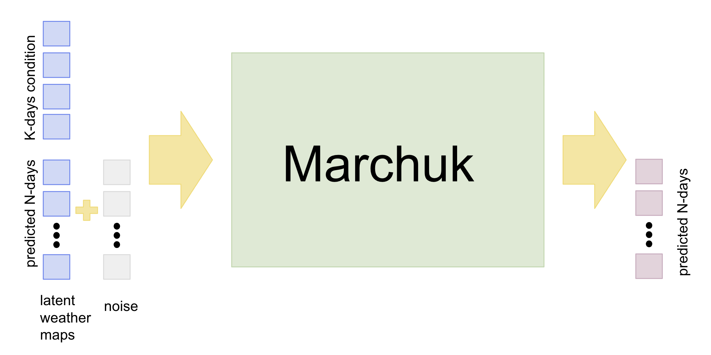
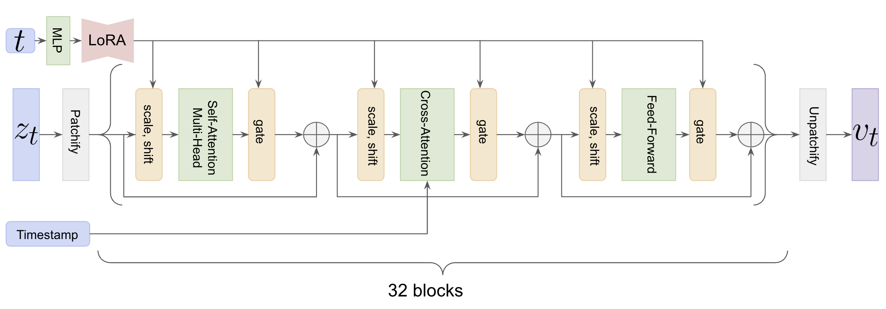
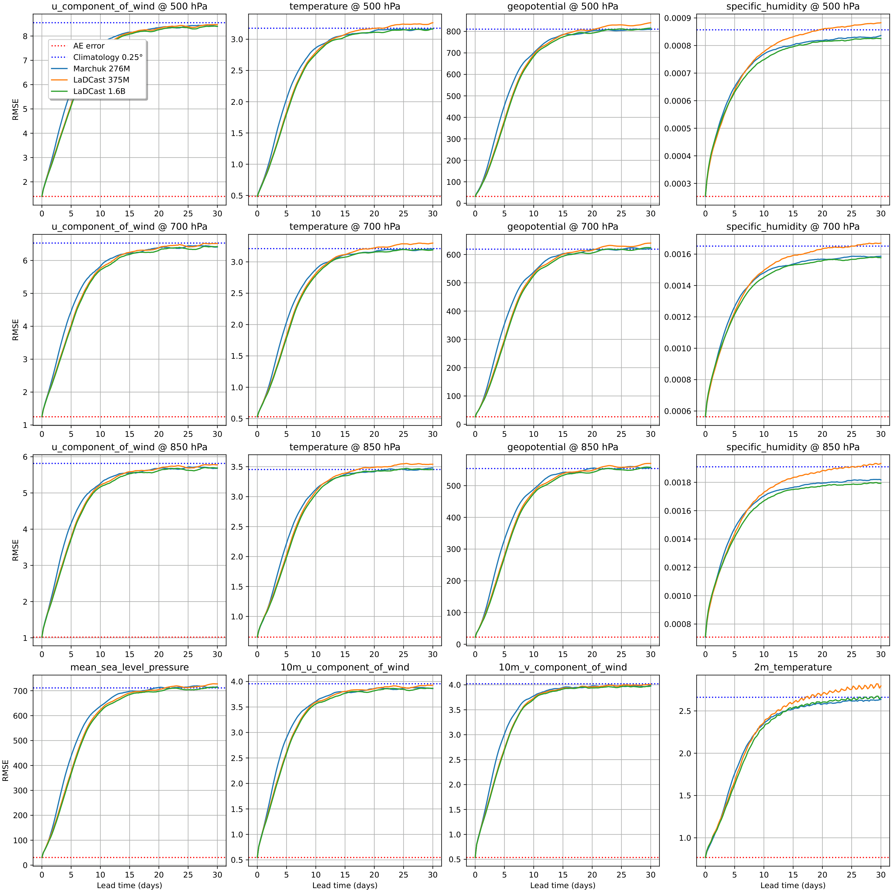
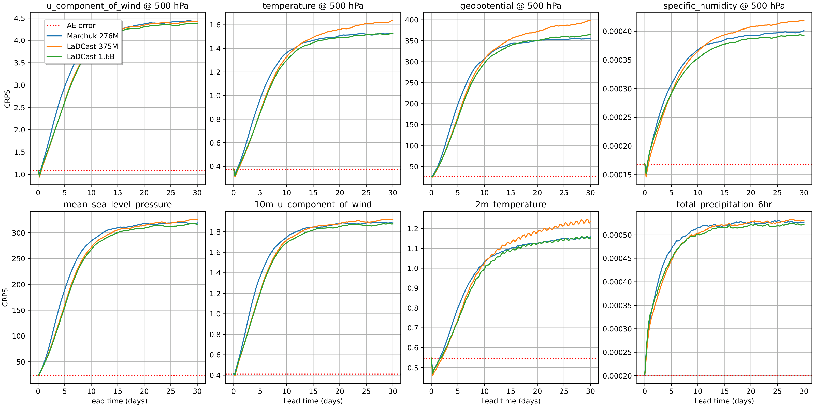
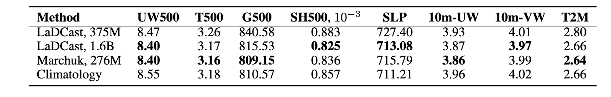
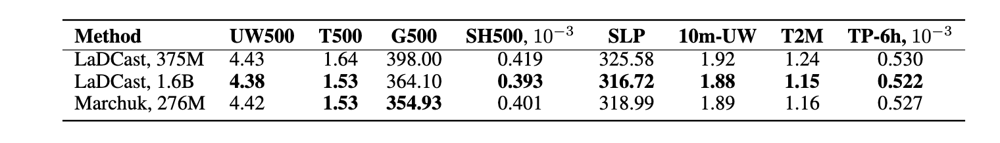

Method Overview

General Scheme of Marchuk.
- Marchuk operates in the latent space learned by the DC-AE model introduced in LaDCast;
- Within this latent space, we train a flow-matching Diffusion Transformer (DiT) to model the conditional distribution of future weather fields given the current state;
- Marchuk is conditioned on weather maps from the previous $K$ days and is provided with noised weather maps for the subsequent $N$ days as input;
- Key components of Marchuk DiT:
- Cross-DiT architecture;
- Timestamp embeddings conditioning within the Cross-Attention blocks;
- LoRA-based timestep modulation;
- New strategy for positional embeddings: learnable 2-D spatial positional embeddings together with 1-D rotary positional embeddings (RoPE) applied along the temporal dimension.

Architecture of Marchuk DiT.
WeatherBench-2 Metrics

RMSE comparison. We evaluate LaDCast and Marchuk on the WeatherBench-2 benchmark over a 30-day prediction horizon.

CRPS Ensemble Metrics Comparison. Figure illustrates the evolution of CRPS over a 30-day forecast horizon.
Inference speed: the model performs predictions entirely in the latent space for a 30-day forecast horizon with an ensemble size of 50, executed on an H100 GPU

RMSE metrics at 30-day forecast horizons. The evaluated variables include atmospheric fields – UW500 (u-component of wind at 500 hPa), T500 (temperature at 500 hPa), G500 (geopotential at 500 hPa), and SH500 (specific humidity at 500 hPa) – as well as surface fields – SLP (sea level pressure), 10m-UW and 10m-VW (u- and v-components of wind at 10 meters), and T2M (temperature at 2 meters).

CRPS metrics at 30-day forecast horizons. The evaluated variables include atmospheric fields – UW500 (u-component of wind at 500 hPa), T500 (temperature at 500 hPa), G500 (geopotential at 500 hPa), and SH500 (specific humidity at 500 hPa) – and surface fields – SLP (sea level pressure), 10mUW (u-component of wind at 10 meters), T2M (temperature at 2 meters), and TP-6h (total accumulated precipitation over the last 6 hours).
BibTeX
@article{marchuk2026,
title={Marchuk: Efficient Global Weather Forecasting from Mid-Range to Sub-Seasonal Scales via Flow Matching},
author={Arsen Kuzhamuratov, Mikhail Zhirnov, Andrey Kuznetsov, Ivan Oseledets, Konstantin Sobolev},
journal={arXiv preprint arXiv:},
year={2026}
}